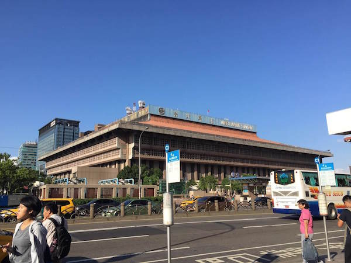

はじめての海外カンファレンスは、台湾でした。〜RubyConf Taiwan 2015 レポート〜
はじめに
2015 年 9 月 11・12 日にかけて、台北の中央研究院人文社會科學館を会場に、RubyConf Taiwan 2015 が開催されました。
個人的なことですが、実はわたしにとって今回が人生ではじめての海外渡航でした。そんなわたしが、初海外 && 初海外カンファレンス という視点から感じたこと・思ったことをまとめてみようと思います。
なお、イベントのようすは Twitter のハッシュタグ #rubyconftw や flickr でもくわしく見ることができますので、あわせてお楽しみください！
出発〜 1 日目
ちょうどこの時期の東京は前代未聞の雨模様続きで、お日さまとすっかりごぶさたになっていた頃でしたね。
出発日には台風の影響もあって空港へ向かう電車のダイヤも大荒れになっていて、とにかくも無事に飛行機が運行されて本当によかった……と胸をなでおろしていたのですが、台湾についてみたら！

この青空！
陽射しもまるで真夏のようで、久しぶりに清々しい気持ちで過ごすことができました。
今回の会場は、台北駅からタクシーで約 30 分ほどの「中央研究院 人文社會科學館」です。中央研究院とは日本でいうところの筑波研究学園都市のようなものだそうで、広い敷地の中にたくさんの研究施設が集まってできている区域です。
それらの施設の中のひとつである人文社會科學館を使って、今回のイベントが行われました。

入場するぞ
会場に着いて受付を済ませ入場していくと、RubyKaigi でもおなじみ（？）の大きな World Map が壁に貼ってあり、参加者それぞれがどこの国から来たのかがわかるようにサインアップできるようになっていました。
二階には地元の企業さんなどのブースが端から端まで並び、大賑わいになっています。
ちなみにこのうちの 五倍紅寶石 (5xruby) さんのブースの前を通ると、五倍紅寶石スタッフさんによって猫耳カチューシャをつけた姿で写真撮影がなされる……というイベントがたびたび発生していたんですよ。
Matz さんをはじめ、名だたる Rubyist たちが猫耳をつけて笑顔で並んでいるさまを見るにつけ、表現しがたい感動が胸にこみ上げてきたものです。（ぜひ画像を掲載したかったのですがうまく撮れたものが手元に無く……残念。）
講演開始
講演はふたつのホールを使い、並行しながらすすめられました。どちらのホールもとても広く、また全席電源つき。同時通訳の音声用には無線レシーバの代わりに Icecast というストリーミング配信サービスを使っており、参加者は自分の PC やスマートフォンに手持ちのイヤホンを差すだけで 英語/中国語 に同時通訳された講演内容を聞くことができるしくみになっていました。
両ホールともにさまざまな話題の講演がなされましたが、中でも個人的には ruby taiwan でも活躍なさっている @JuanitoFatas さんの発表はやっぱり素敵だなと思いました。お話の構成もスライドの作り方も、すべてが魅力的です。今回のお話の内容は RSpec をこれから使いはじめる方へ向けた紹介がメインで、とてもわかりやすくまとめられていました。
それとこの日は、@hsbt さんによる “Middleware as Code with mruby” の講演もありました！
ライブデモもあり、とても充実した内容で聴く人をひきつけていました。
Matz さん講演、そして LT タイム
1 日目の講演の最後は Matz さんの講演 “Lazy Programmer” で締めくくりです。 “We have to work hard to be lazy.” といういわば “プログラマの美徳” に関する話をなさったうえで、Ruby という言語ではそれをどう実現しようと考えているのかというビジョンについて聴くことができました。
その後の Lightning Talks タイムでは、日本から @kurotaky さんによる “Enterprise Rails Application Tips”、Iwase Hiroaki さんによる “Ruby based Distributed Key Value Store ROMA” の発表がありました。
オフィシャルパーティ
すべてのプログラムが終了したところで、オフィシャルパーティに突入！
パーティでは地元ならではのお食事と台湾ビールがどっさりふるまわれましたが、お腹をすかせた Rubyist たちはあっという間にたいらげてしまっていました。

参加者はみんなおいしい食べ物飲み物を片手に思い思いに交流を楽しんでいるようでしたが、わたしもこの場で地元からの参加者の方々とおしゃべりをしたり、台湾の Ruby コミュニティで活躍なさっている方々に紹介していただいたりと、とても貴重な時間を過ごすことができました。
2 日目
前日に負けないくらいよいお天気になった 2 日目のさわやかな朝は Sarah Allen さんの “Transparency wins” からスタートです。
そのすぐ後には、@igaiga555 さんによる “Debugging basics for Rails applications” の講演がありました。Rails エンジニアなら知っておきたいデバッグ手法とそれを助ける便利ライブラリを詳しくていねいに教えてくれる内容となっていました。
さて、 RubyConf Taiwan 2015 のラストを飾るのは、Aaron Patterson さんによる “Request and Response” でした。後半はとても勉強になる内容だったのですが、講演開始から怒涛のように繰り広げられたおもしろトークのおかげで、結果としては「あーよく笑った」みたいな感想になりました。さすが Aaron さん……。
おまけ・士林夜市
イベントが全て終わった後、@JuanitoFatas さんに誘っていただき、登壇者のみなさんといっしょに士林夜市へ出向きました。 ちょうど土曜日の夜ということもあってかとにかくものすごい人・人・人！！！
数ある台湾名所の中でもトップクラスの人気スポットだということをまったく知らずに行ったわたしは、その規模の大きさと人の多さ、そして “よく見知った日本ではない、別の場所” の空気にただただドキドキして目をみはらせていました。
そんな中で台湾の数々の名物フードをいただきながらみなさんと交流を深めるという、またとない機会を体験することができて、わたしにとって忘れられない素敵な思い出となったことは言うまでもありません。
Thank you again for showing us around the nigit market, Juanito!
今回のイベントを体験してみて
初めての海外、初めての海外カンファレンス。
文化も街並みも、360° すべてが自分の生まれ育った国とは違う。
在台中はまるで夢の中にいるようで、体がふわふわと浮かんでいるような感覚で終始過ごしていたけれど、登壇者・参加者のみなさんの使っているサービスやツールはわたしたちがいつも使っているものとほとんど違わなかった。
住む国や話す言語が違っても打つコマンドは同じだというのをこの目で見て確かめられたことは、うまく言い表せませんがわたしの中に強い勇気を生んでくれた気がします。
また、今回以前に台湾に行ったことのある方々から「台湾はいいよ、街も人もとても素敵で、住みたくなっちゃうよ」と教えていただいていたのですが、実際に行ってみると本当にその通りで、心から納得している自分がいました。
これを読んでくださった方にも、今回のイベントの、そして台湾のたのしさと魅力が少しでも伝わっていたらとてもうれしいです。関係するすべてのみなさま、ありがとうございました！
書いた人
ゆかお ( @yucao24hours )
永和システムマネジメント所属。よちよち.rb organizer。